Better cricket plots
I’m sitting watching cricket tonight, the first day of the Australia vs West Indies Boxing Day test. Just now video of retired batsman Chris Rogers being honored was played, along with a plot of his batting record, shown on screen similar to this one below:
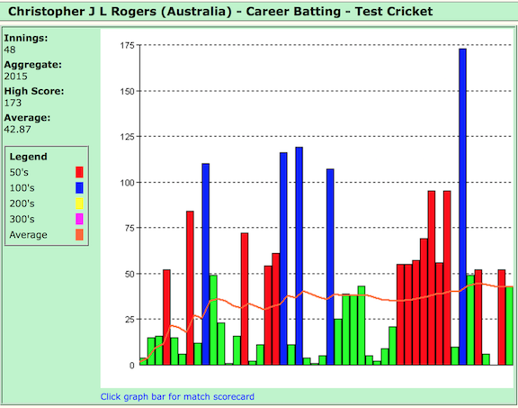
Howzat?
What are they trying to show? What’s the data in this plot? Is it a bar chart? A histogram? What does color mean?
Sequentially, the scores for Rogers test match innings are shown. The height of the bars represent the runs scored in each innings. The horizontal axis is a temporal. It is not a true representation of date that the innings was played, but a simple integer 1 through 48 ordering the innings that he played in time. Color redundantly represents score, e.g. blue means more than 100 runs.
Barcharts like this are being used to display various statistics during a match, across matches, and types of matches, in the commentating. It is not a good display, actually it is the wrong way to show this data.
Re-draw this data
We pulled a copy of Rogers’ batting records from the web. Using R, we read the data, wrangle it a little to get it into tidier form, and plot the runs by date.
rogers2 <- read_delim("rogers2.dat", "\t")
rogers2$Date[seq(2,50,2)] <- rogers2$Date[seq(1,49,2)]
rogers2$Date <- as.Date(rogers2$Date, format="%d/%m/%Y")
rogers2$Vs[seq(2,50,2)] <- rogers2$Vs[seq(1,49,2)]
rogers2$Ground[seq(2,50,2)] <- rogers2$Ground[seq(1,49,2)]
rogers2$Test[seq(2,50,2)] <- rogers2$Test[seq(1,49,2)]
qplot(Date, Runs, data=rogers2, size=I(3), alpha=I(0.5)) + theme_bw()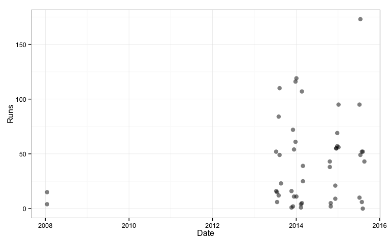
Message 1
Rogers’ first two innings were in 2008. There was a long spell where he did not play test cricket - probably dropped because he performed badly in his first opportunity. The long period in Sheffield Shield cricket may have helped him mature into a better batsman when he got his second opportunity. It would be better to remove the 2008 data, so that we can focus on his performance once he was consistently on the field.
Message 2
Why do the cricket statisticians use bar charts for the runs plotted against the innings index? What are the alternatives? One main reason is that the bar has more ink on the page than a dot and so gives more weight to the number. Its not completely incorrect to use a bar for runs in cricket, after all they do start batting at 0 and accumulate runs in integer amounts. But it incorrectly puts too much emphasis on the large totals scored by the batsman because the low scores get less weight on the page. This is misleading. To evaluate a batsman’s performance we need to see roughly how much they score on average, and how varied are there scores, i.e. they reliably score well.
What is really wrong with these plots is that they use an index for the horizontal axis to place the bars. Its a proxy for time. But as we have seen with Rogers, if there is a big gap in between innings played (2008-2013) we don’t see this in the plot. Why not plot the date the innings was played? Lets re-make the bar charts with date on the horizontal axis and see what happens.
Message 3
qplot(Date, Runs, data=rogers2, geom="bar", stat="identity") +
geom_hline(yintercept=100, colour="grey70") +
geom_hline(yintercept=50, colour="grey70") +
theme_bw()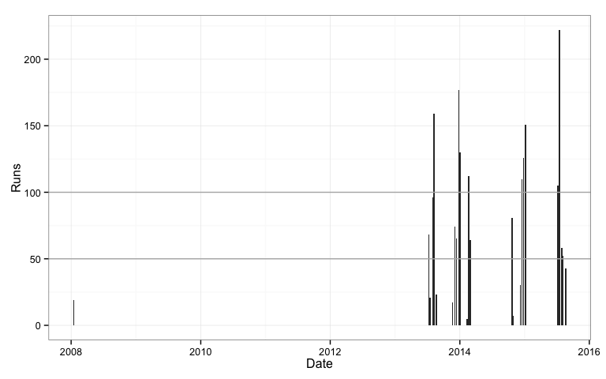
We can now see the big gap in Rogers test career. Ok, we know this now, so lets trim the data, and remove these two innings and focus on his performance on his return to the national team.
rogers2 <- rogers2 %>% filter(Date > as.Date("01/01/2010", format="%d/%m/%Y"))
qplot(Date, Runs, data=rogers2, geom="bar", stat="identity") +
geom_hline(yintercept=100, colour="grey70") +
geom_hline(yintercept=50, colour="grey70") +
theme_bw()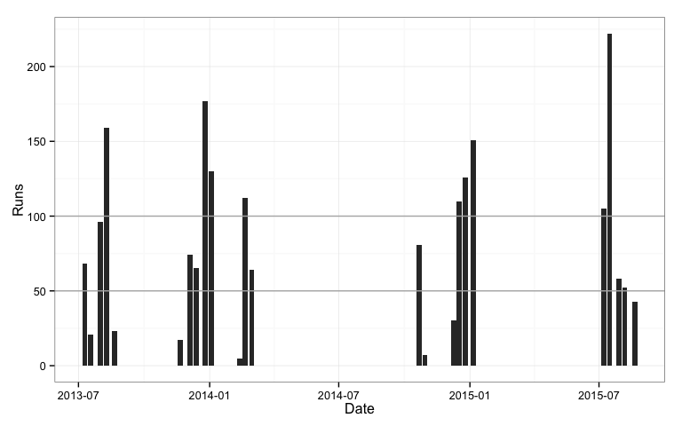
Something looks wrong: Rogers only scored 5 test centuries, but there are more peaks than this. Maybe some innings were completed on the same date, and the runs for these innings were aggregated. We can check this using dodged bars.
qplot(Date, Runs, data=rogers2, geom="bar", stat="identity",
position="dodge") +
geom_hline(yintercept=100, colour="grey70") +
geom_hline(yintercept=50, colour="grey70") +
theme_bw()The 50 and 100 mark guide lines are drawn over the bars. To fix this we need to use ggplot instead of qplot.
ggplot(data=rogers2) +
geom_hline(yintercept=100, colour="grey70") +
geom_hline(yintercept=50, colour="grey70") +
geom_bar(aes(x=Date, y=Runs), stat="identity",
position="dodge") +
theme_bw()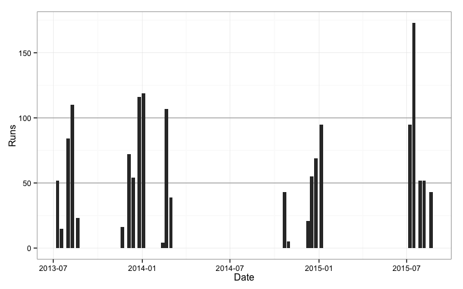
Using date we can also see the seasonality of the game, Rogers scores runs only around new year and mid-winter. The gaps are a distraction, because no data was generated in these periods, so we would really like to ignore these for the plot. This is one reason why the cricket statisticians resort to an index for the x axis. The other main reason, I suspect is because they are using excel, and this software makes it easy to use an index on an axis.
The tool that people use often dictates the type of plots they make. Whatever is easy to do in the tool is likely the product that is created. A better approach is to start with what we want to learn, design the appropriate plot(s) for uncovering this information, and shape the tool to make the appropriate plot(s).
A complete overhaul
Things that we’d like to know about the batman’s innings include:
- performance by seasons
- runs scored consistently and reliably scoring runs
- whether performance depended on the opponent or location
- for long term players is performance up-trending or down-trending
- the proportion of the team’s total that this score represents
Aggregating
There is not a lot of data in a single match since a batsman only bats at most two innings, and two points is not enough data to calculate statistics. Aggregating in different ways on time can help pull enough data together to better assess performance. The natural ways to aggregate temporal data are day, week, month, quarter, year, none of which work for the scale of cricket.
Sometimes we hear a commentator say a player is having a good season. Maybe we can think about test cricket as seasons, summer Australian time, England time, and the occasional shoulder season in the spring or autumn. We can create a variable to reflect these and show runs by season.
cricket_season <- function(x, with_year = TRUE){
m <- month(x)
seasons <- c(`1` = "a.summer", `2` = "a.summer", `3` = "b.autumn",
`4` = "b.autumn", `5` = "b.autumn", `6` = "c.winter",
`7` = "c.winter", `8` = "c.winter", `9` = "d.spring",
`10` = "d.spring", `11` = "a.summer", `12` = "a.summer")
if (isTRUE(with_year)) {
q <- unname(seasons[m])
y <- year(x+months(2))
q <- paste0(y, ".", q)
q <- factor(q)
}
else
q <- unname(seasons[m])
return(q)
}
rogers2$Season <- cricket_season(rogers2$Date)
qplot(Season, Runs, data=rogers2, size=I(3), alpha=I(0.5),
position = position_jitter(width = .1)) +
geom_hline(yintercept=100, colour="grey70") +
geom_hline(yintercept=50, colour="grey70") +
geom_hline(yintercept=5, colour="grey70") + theme_bw()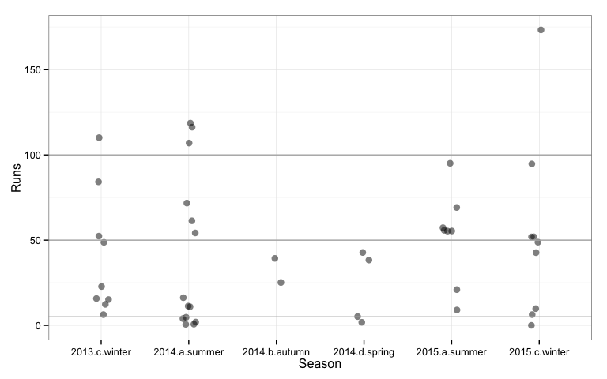
Looking at the performance by season, Rogers best season was summer 2014 when he scored three centuries. We can also see that in this season in five innings he also scored less than 5 runs. His scoring is a mixed bag in every season, some very disappointing innings balanced with some very impressive run scoring.
By opponent
qplot(Vs, Runs, data=rogers2, geom=c("boxplot","point")) +
theme_bw() 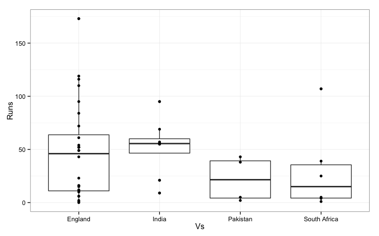
Most of Rogers’ innings were played against England. Against India he scored more consistently. Against other opponents he was as likely to go out for a low score as a high one.
Is first or second innings better?
rogers2$id <- rep(1:24, rep(2,24))
qplot(Inns, Runs, data=rogers2, group=id, geom="line") +
facet_wrap(~Vs) + theme_bw() 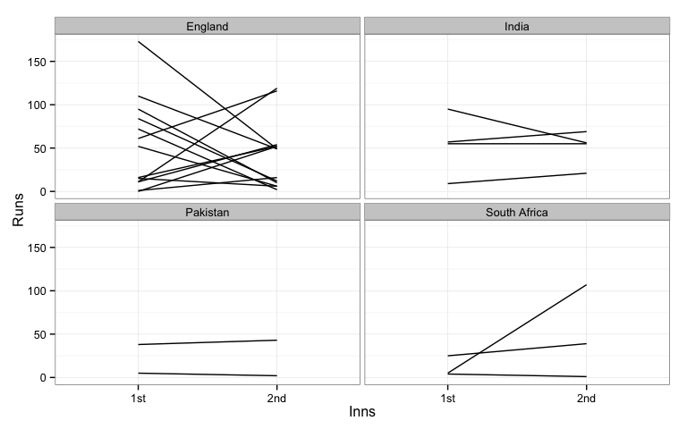
Here we plotted score against innings number. Lines connect the two innings for a match. The main pattern that we see for Rogers is a lot of crossed lines. This means that if he scored well in one innings he tended to score not so well in the other innings. When a line goes up, the score in the first innings was lower than that in the second, and a downward sloping line indicates better first innings score than second. If he consistently scored the lines would be relatively flat. Against India, Pakistan and South Africa we could say this was true, that his innings scores were consistent. Against England, it was one up, one down.
Run rate
Test cricket is not a time-restricted game and batsmen typically have the luxury of building up their runs as the conditions allow. But it can be interesting to examine runs scored by the number of balls faced, which is the strike rate. The higher the strike rate the faster the runs are coming. Below Roger’s strike rate (\(x100\)) is plotted by season. A value of 50 means that one run is score for every 2 balls faced. A value of 100 means one run per bowl.
rogers2$`B/F` <- as.numeric(rogers2$`B/F`)
rogers2$`S/R` <- as.numeric(rogers2$`S/R`)
qplot(Season, `S/R`, data=rogers2) +
geom_hline(yintercept=50, colour="grey70") + theme_bw() 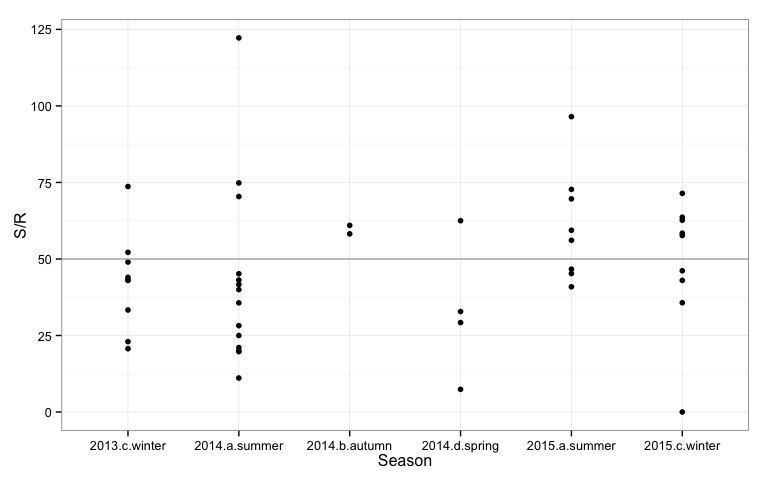
Rogers run rate hovers around 50. The summer where he scored the three centuries his run rate was mostly lower than 50. His run rate was highest in the summer of 2015.
Looking at run rate by the innings total could be interesting also. This is shown below.
qplot(Runs, `S/R`, data=rogers2) +
geom_smooth(method="lm", se=F) + theme_bw() + theme(aspect.ratio=1)
qplot(Runs, `S/R`, data=rogers2) +
geom_smooth(method="lm", se=F) +
facet_wrap(~Vs) +
theme_bw() + theme(aspect.ratio=1)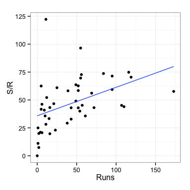 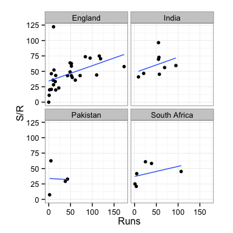
Rogers’ strike rate increases with larger innings scores. It looks like at some point during these innings his confidence builds and he goes for more shots to yield overall faster scoring. His rate shows a similar pattern for all opponents. He has one unusually high strike rate of about 125. This is an anomaly compared to his other performances and may have been a time when he was told to go in have a quick bash to rack up some runs, before a declaration.
Summary
I recommend showing dotplots of the runs by season, instead of bar charts by index. Ideally overlaying summary statistics such as averages and standard deviations to simplify comparison across seasons, or in the plot below the interquartile range, which shows the middle 50% of scores.
seasonstats <- rogers2 %>% group_by(Season) %>% summarise(m=median(Runs, na.rm=T), q1=quantile(Runs, 0.25, na.rm=T), q3=quantile(Runs, 0.75, na.rm=T))
ggplot() +
geom_hline(yintercept=100, colour="grey90") +
geom_hline(yintercept=50, colour="grey90") +
geom_hline(yintercept=0, colour="grey90") +
geom_errorbar(data=seasonstats, aes(x=Season, ymin=q1, ymax=q3),
width=0, alpha=0.7, color="black", size=12) +
geom_point(data=rogers2, aes(x=Season, y=Runs), size=5, alpha=0.6,
colour="red",
position = position_jitter(width = .1)) +
theme_bw()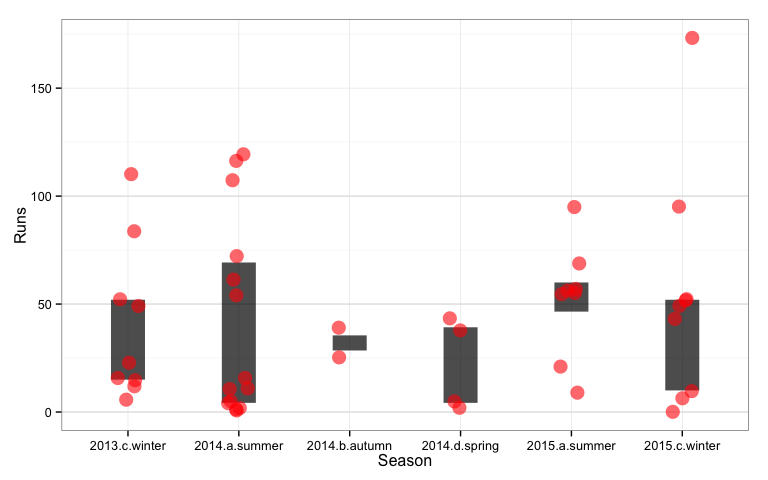
If you really insist on using index on the horizontal axis, these would would be my suggested enhancements: use points instead of bars, a graduated or sequential color scale to highlight the high scores, and add a mean and/or a median career score as a reference line.
rogers2$Test[seq(2,50,2)] <- rogers2$Test[seq(1,49,2)]
rogers2$Test <- as.numeric(rogers2$Test)
rogers2$milestone <- "<50"
rogers2$milestone[rogers2$Runs>49] <- "50s"
rogers2$milestone[rogers2$Runs>99] <- "100s"
rogers2$milestone <- factor(rogers2$milestone, levels=c("<50", "50s", "100s"))
mn <- mean(rogers2$Runs, na.rm=T)
md <- median(rogers2$Runs, na.rm=T)
qplot(Test, Runs, data=rogers2, size=I(4), alpha=I(0.9), color=milestone) +
scale_color_manual("", values=c("<50"="grey60", "50s"="orange", "100s"="red")) +
geom_hline(yintercept=md, color="grey80",
alpha=0.5, size=3) +
annotate("text", x=22, y=md-5, label=paste("Median runs=",md), color="grey80") +
theme_bw()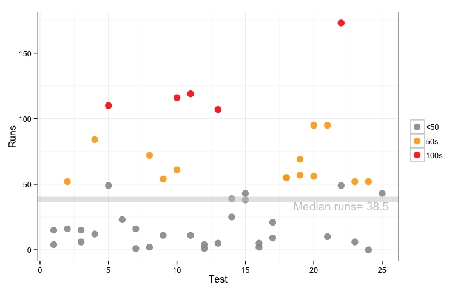
In terms of available data, if the data table on the web contained the team total for innings it would be easy to see how much the batsman contributed to the team’s effort. If the country of the cricket ground was included in the data table we could examine a location effect on performance. These could be pulled from other sources, but I’ll wait until another blog post to discuss this.
Also in future blog posts this Australian summer, look for some other plot recommendations for types of matches, one day internationals, T20, big bashes, and for bowlers, comparing batsmen and teams. I’d like to also explore the women’s cricket data but this is currently very sparse.
Acknowledgements
The data was extracted from http://www.howstat.com. Plots were made using these R packages: dplyr, ggplot2, knitr, lubridate, readr, tidyr.